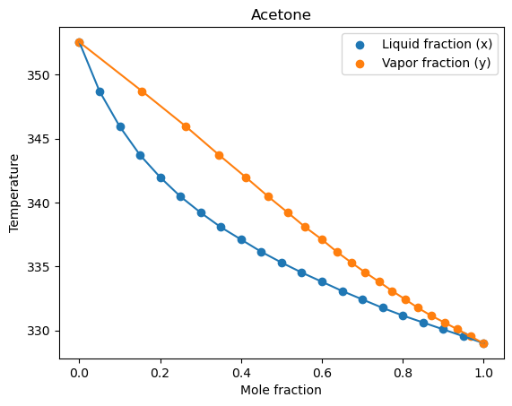

ChE 212: Homework 1 Problem 3#
Problem Statement#
Calculate the T-xy and y-x phase diagrams for the acetone benzene mixture at 1 atm. Assume the modified Raoult’s law applies and use the Wilson equation to calculate activity coefficients.
You can find the Wilson equation parameters in Nagahama et al. 1971.
Vapor pressure as a function of temperature (T) can be estimated using the Antoine Equation.
Benzene’s and Acetone’s Antoine Equation parameters can be found in the NIST Chemical WebBook
Let’s start by defining our equations#
Antoine Equation: $\(log_{10}(P) = A - \frac{B}{T+C}\)\( Wilson Equation: \)\(W = \frac{A_{12}}{x_1 + (x_2\cdot A_{12})} - \frac{A_{21}}{(x_1\cdot A_{21}) + x_2} \)$
Gammas:
\[\ln(\gamma_1) = -\ln(x_1+(x_2\cdot A_{12})) + x_2\cdot W\]
\[\ln(\gamma_2) = -\ln(x_2+(x_1\cdot A_{21})) - x_1\cdot W\]
y1 and y2:
\[y_1 = x_1\cdot \gamma_1 \cdot \frac{P_{sat1}}{P}\]
\[y_2 = x_2\cdot \gamma_2 \cdot \frac{P_{sat2}}{P}\]
We’ll let acetone be system “1” and benzene be system “2”
And now our known variables#
P = 1 #bar NOTE: atm on problem! bar in solutions
##Antoine Coefficients
#Acetone
A_ace = 4.42448
B_ace = 1312.253
C_ace = -32.445
#Benzene
A_benz = 4.73
B_benz = 1660.652
C_benz = -1.461
## Nagahama et al. 1971 for mixtures
A12 = 0.4522 ## acetone in benzene
A21 = 1.2026 ## benzene in acetone
Now let’s make an x1 and x2 arrays.#
Remember, each respective entry of x1 and x2 have to sum to 1.#
import numpy as np
x1 = np.linspace(0,1,21) ## this gives us steps of 0.05
x2 = 1 - x1 ## this gives us what x2 has to be based on the molar fraction of acetone present
And our W array#
W = (A12/(x1 + (x2*A12))) - (A21)/((x1*A21)+x2)
Let’s calculate our gammas#
A quick note: in Python “log” is the natural log. np.ln() does not exist. To do log base 10, the code is np.log10()#
ln_gamma1 = -np.log(x1+(x2*A12)) + (x2*W)
gamma1 = np.exp(ln_gamma1)
ln_gamma2 = -np.log(x2+(x1*A21)) - (x1*W)
gamma2 = np.exp(ln_gamma2)
Now, let’s define a function that will help us solve for temperature. We want to find the temperature that makes the y1 + y2 = 1, or that makes 1 - (y1 + y2) = 0.#
def g(T,i): ## this is a function. we pass in a temperature (T) and an array index (i)
Psat1 = 10**(A_ace - (B_ace/(T + C_ace))) ## saturated pressure using inputted T
Psat2 = 10**(A_benz - (B_benz/(T + C_benz)))
y1 = x1[i]*gamma1[i]*(Psat1/P) ## calculating vapor molar fraction of acetone
y2 = x2[i]*gamma2[i]*(Psat2/P) ## calculating vapor molar fraction of benzene
sumy = y1 + y2 ## to equal 1
diff = abs(1 - sumy) ## is how we can easily find a minimum. we want this value to be as close to zero as possible!
return diff
We need to define an initial guess array. We don’t know what the temperature might be, so we might make a guess that the temperature is between 300 and 360C. We choose 1000 increments between 300 and 360 to be evaluated#
Note: 1000 increments is arbitrary. One can choose any positive integer!#
Temp = np.linspace(300,360,1000)
Let’s solve for our temperatures!#
T = [] ## define an empty array to store our iterative solution temperature values.
for i in range(0,len(x1)): ## iterating over all the values in x1
min_diff = 1000 ## we define a variable min_diff that "resets" our difference comparison
for j in range(0,len(Temp)): ## iterating over all temperatures in Temp
diff_out = g(Temp[j],i) ## using the function above to calculate the difference of (1-(y1+y2)) at a given temperature (j) and x1, x2 (i)
if diff_out < min_diff: ## if we reach a new minimum (less than the previous min_diff)
min_diff = diff_out ## we establish whatever difference from the function output as the new min_diff
True_temp = Temp[j] ## this pulls out the temperature at that minimum
T.append(True_temp) ## this adds the minimum difference temperature to our empty array of iterative temperature values
#print(f"Temperature: {True_temp},", f"Difference: {min_diff}") ## this prints the "True temperature" and minimum difference for each x1, x2 combo
We have our liquid molar fractions and temperatures. We still need to calculate our y1 and y2 values with our “true” temperature#
y1 = [] ## define empty arrays to store y1 and y2
y2 = []
for i in range(0,len(T)): ##iterating over the iterative solution temperature values. could also use x1 or x2 here since they are the same length
Psat1 = 10**(A_ace - (B_ace/(T[i] + C_ace))) ## saturated pressure using inputted T
Psat2 = 10**(A_benz - (B_benz/(T[i] + C_benz)))
y1_calc = x1[i]*gamma1[i]*(Psat1/P) ## calculating vapor molar fraction of acetone
y2_calc = x2[i]*gamma2[i]*(Psat2/P) ## calculating vapor molar fraction of benzene
y1.append(y1_calc) ## adds the calculated y1 to the array
y2.append(y2_calc)
Now we can make a T-x-y plot!#
import matplotlib.pyplot as plt
plt.scatter(x1,T) ## plotting x1 data points
plt.scatter(y1,T) ## plotting y1 data points
plt.plot(x1,T) ## plotting x1 line
plt.plot(y1,T) ## plotting y1 line
plt.xlabel('Mole fraction') ## adding x axis label
plt.ylabel('Temperature') ## adding y axis label
plt.legend(['Liquid fraction (x)', 'Vapor fraction (y)']) ## making a legend
plt.title('Acetone') ## adding a title
plt.show() ## makes output cleaner
